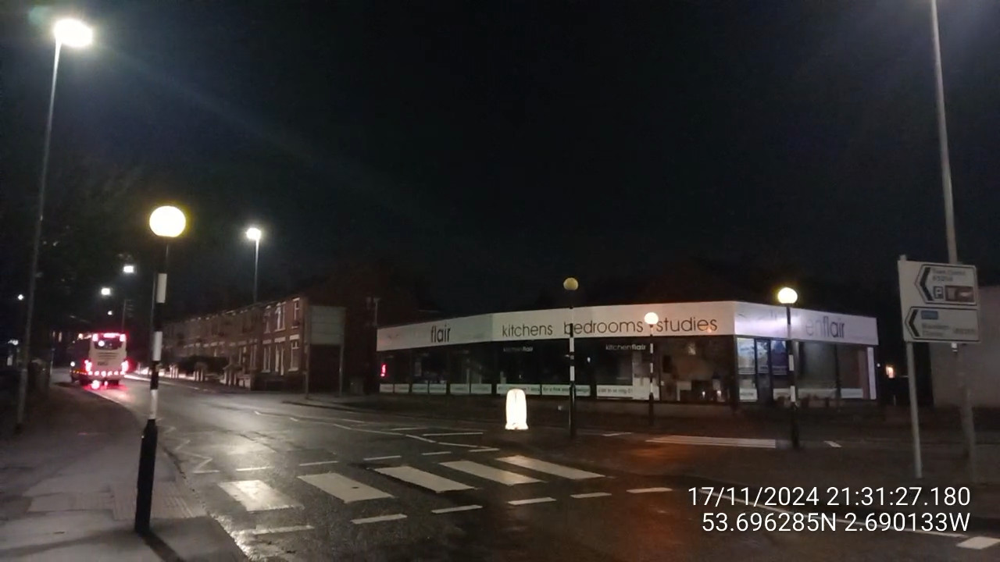
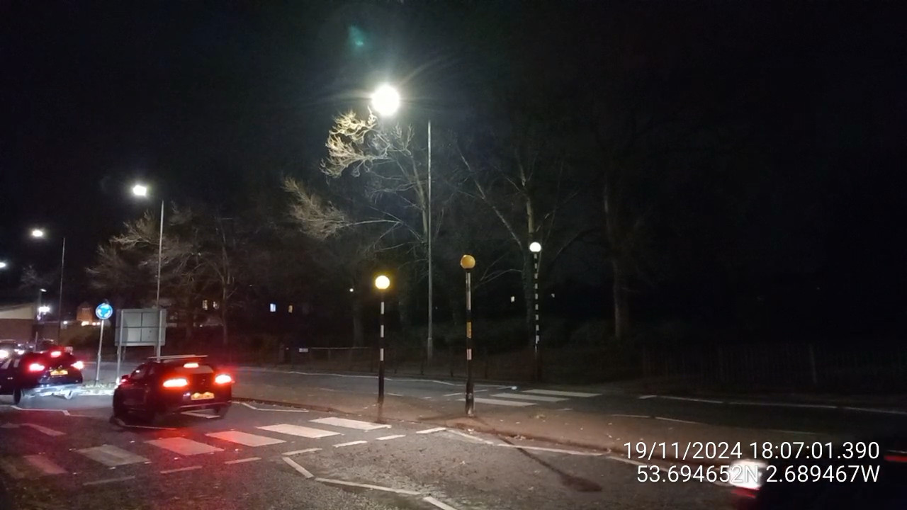
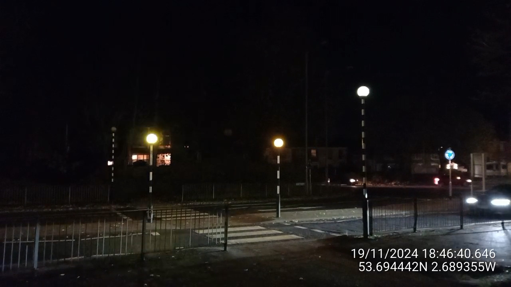

In the United Kingdom, pedestrian crossings on roads are called "zebra crossings", because they are marked by white stripes on the grey-black tarmac. Every zebra crossing has two poles with flashing yellow lights, in order to make them more visible to road users at night. These flashing lights are called Belisha beacons, named after former Minister for Transport Leslie Hore-Belisha, who introduced them in 1934.
On many zebra crossings, the Belisha beacons do not flash at the same time, and have slightly different amounts of time they remain on and off for. As a result, they phase in and out of sync with each other, flashing together for a few seconds, and then drifting apart, alternating, and then gradually coming back together. This dance repeats indefinitely, as they operate continuously 24 hours a day. This idea of phase has been explored in music, perhaps most notably by Steve Reich in pieces like Piano Phase from 1967.
I've always found the beacons to be beautiful. There is something about their deep yellow glow which warms my soul at night, like tiny suns winking in the darkness. They are a ubiquitous and mundane feature of the British urban environment: you can't walk through a town for long without finding a crossing with a pair of beacons merrily dancing with each other, and to most people they are a purely functional aspect of our transport infrastructure, to be noticed on approach and forgotten once passed. But these joyful creatures have a life of their own, and there is music in their dance. I wanted to show how beautiful these flashing beacons are, and bring their music to life.
I recorded millisecond-timestamped video footage of two sets of beacons in my hometown of Leyland, Central Lancashire. Using this data, I was able to estimate the on and off periods of each beacon, and their relative phases with each other. When you click the play button at the top of this page, this website uses the current date and time to calculate the current state of each beacon, and plays a piano note when each one turns on. You are therefore listening to a live performance of the beacons as they dance tirelessly throughout the days and the nights. This is the hidden music of the streets I walk every day.
Like all things, this artwork in this form will eventually fall apart. The phase information that produces this music is only an estimate of the beacons' true behaviour. Over time, this representation will drift away from the dance of the beacons, and will no longer be in sync with them. Just like the beacons and the roads they mark crossings on, this music requires regular maintenance in order to remain useful.
If you would like to visit the beacons to say hello and watch them dance to their music, here is a map:
This artwork was created by Stella Aster. For more things, visit her website at https://stella-aster.com/